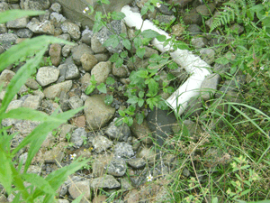

PUCARÁ
ALCANTARILLADO:
SIGUE LA BÙSQUEDA DE SOLUCIONES
Es la obra más inspeccionada de la zona, el cantón, la provincia y tal vez incluso del país. Es el tema al cual el equipo de este medio se ha dedicado más tiempo que cualquier otro, exceptuando los diferentes proyectos mineros propuestos y en marcha en la zona. Es un tema que, como ningún otro, exceptuando de nuevo, la minería, ha provocado divisiones en una comunidad inteña. Es un problema que tiene como sus protagonistas un antiguo profesor de escuela, un antiguo supervisor de educación de la zona y una fundación que debe rendir cuentas a la fuente internacional de fondos, al municipio y, sobre todo, a la comunidad perjudicada. Es uno de esos proyectos ejemplares de desperdicio de fondos –casi 80 mil dólares– que dan a las ONG en general mala fama.
Hablamos, como muchos lectores ya habrán adivinado, del sistema de alcantarillado de Pucará.
Cómo crear un caos
Con siete inspecciones a su haber y un análisis de agua, está confirmado: la obra ha provocado un caos. A raíz de esto, la comunidad de San Antonio de Pucará de forma contundente se reitera: no va a recibir el alcantarillado en las condiciones actuales. Para encontrar una solución, los miembros de la comuna han enviado varios oficios a autoridades de la parroquia, el cantón, la provincia, el Ministro de Relaciones Exteriores y la Embajada de Japón, de donde vino el financiamiento de la obra. Así mismo, para conocer la versión de la Fundación Ecuatoriana de Desarrollo Social (FUNEDES), ONG ejecutora del sistema de alcantarillado, llamamos en varias ocasiones a los teléfonos personales e institucionales de su equipo, pero no obtuvimos respuesta.
En mayo, la Comunidad de Pucará se dirigió al alcalde de Cotacachi, Alberto Anrango. En el oficio enviado, el presidente de la comunidad, Fausto Vetancourt, asegura que la Fundación encargada de su ejecución tiene la responsabilidad de entregar una obra en buenas condiciones, o ser sancionada por las irregularidades detalladas en múltiples informes. En vista de la negativa de la Fundación de responder al caso, el señor Vetancourt pidió al Alcalde que considere incluir las mejoras del alcantarillado dentro del presupuesto participativo para el próximo año. Ante este pedido, el Alcalde le informó que solicitaría la disolución de la FUNEDES ante el Ministerio de Inclusión Económica y Social (MIES).
En un oficio enviado al Director Provincial del MIES, a mediados de junio, el señor Vetancourt pidió información sobre los trámites de disolución de la Fundación en cuestión. Hasta ahora, no tiene respuesta. De igual manera, se dirigieron al doctor Ricardo Patiño, Ministerio de Relaciones Exteriores. Después de darle todos los antecedentes sobre el financiamiento y la ejecución de la obra, concluye con estas palabras: “Lamentamos que no hemos solucionado este problema en una manera eficaz, por eso nos dirigimos a usted. La comunidad perteneciente a la zona de Íntag lo único que quiere es que los impuestos y el dinero del pueblo japonés y su bondad ante nuestras necesidades sean gastados de manera justa y transparente.”
Para conocer si la entidad financista ha logrado sancionar a la Fundación o encontrar alguna solución al respecto nos pusimos en contacto con el doctor Miguel Ángel Pazmiño, técnico de la Embajada de Japón. En una entrevista telefónica el 23 de junio, el abogado dijo que si la “FUNEDES no cumple los objetivos a satisfacción de la comunidad, tiene que devolver el dinero”. Afirmó que el embajador ha enviado sendos oficios: a la ministra del MIES, Ximena Ponce, para que intervenga en la Fundación; a la la doctora Gloria Realpe de la Dirección Regional #7 de la Contraloría, solicitándole para que llevara a cabo una auditoría de la inversión; al alcalde de Cotacachi, licenciado Alberto Anrango, para ponerle al tanto de las irregularidades.
El doctor Pazmiño dijo, enfático: “Pagamos por la construcción y fiscalización. Tenemos doble responsabilidad”. Considera que la solución es que la Fundación devuelva el dinero o entregue la obra a satisfacción, con documentos de respaldo y cuentas claras. El convenio entre la Fundación y la Embajada del Japón se firmó el 14 de diciembre del 2007. Como lo confirma el funcionario de la Embajada, en el literal j del documento, se indica: El donante se reserva el derecho de reclamar el desembolso. Sin embargo, el funcionario dice que “se esconden”. El problema es que “hicieron caducar las pólizas”, afirmó.
{niftybox background=#F0F0EE,textcolor=green,font=, width=, height=,clear=}
LA CRÓNICA DE UN DESASTRE ANUNCIADO
El problema inicia hace más de tres años cuando autoridades de la FUNEDES llegaron ofreciendo un sistema de alcantarillado. La obra no era una prioridad pues los habitantes, en su mayoría, tenían fosa séptica y por esa misma razón no lo habían solicitado al Presupuesto Participativo del Cantón. Sin embargo, por ser bien respetuosos, agradecieron tan “noble” causa hacia una comunidad rural con pocas oportunidades y recursos.
La Embajada de Japón donó los recursos para la obra lo que quiere decir que fue financiada por los impuestos de los ciudadanos japoneses. FUNEDES la ejecutó, mediante su representante Rolando Lomas quien, en ese entonces, era supervisor para la Zona del Ministerio de Educación.
Después de construir un sistema cuyas fallas son numerosas y graves, cuyo alto costo despertaba dudas en todas partes, cuyas contrataciones fueron igualmente dudosas y hechas fuera de lo común, dejó a la comunidad con una obra que nunca fue entregada a la Embajada ni a la comunidad. Pocas familias están conectadas, y como ya hemos reportado en varias ocasiones, tiene tramos a la vista y fugas y, según un estudio hecho por la doctora Karen Knee, del prestigioso Instituto Smithsonian de Washington, D.C., está contaminando el río Toabunchi (ver INTAG, #69, página 16-18 ) y representa un potencial problema de salud pública.
Los comuneros lamentan el dinero gastado en obras innecesarias y mal hechas que, en vez de solucionar problemas, los crean. Y, para colmo, que las personas responsables para la ejecución se vayan con el dinero como si nada hubiese pasado.
En vista de todo esto, la comunidad solicita un alcantarillado en buenas condiciones, pues les dejaron “la cagada”, y esto no es metafórico. Y, por otro lado, que los responsables tengan las sanciones que corresponden y se vigile el dinero invertido por el pueblo japonés. Es decir, que arreglen el problema que ha creado tanto conflicto en Pucará.
{/niftybox}
{niftybox background=#F0F0EE,textcolor=green,font=, width=, height=,clear=}
¿UNA FUNDACIÒN FANTASMA?
Todas las interrogantes que deja el sistema de alcantarillado de Pucará aumentan después de hacer una sencilla búsqueda en la Internet para localizar a las autoridades de la FUNEDES. La Fundación Ecuatoriana de Desarrollo Social Ambiental tiene sede en Otavalo y está a cargo de Carmen Trujillo. Sin embargo en varias ocasiones intentamos ponernos en contacto, y nada. Incluso hace algún tiempo el presidente de la Junta Parroquial de Apuela (ver INTAG 62 pag. 13) fue a visitarla pero la dirección no coincidía. Además, en los documentos correspondientes al alcantarillado, FUNEDES quiere decir Fundación Ecuatoriana de Desarrollo Social. En ninguna parte consta la palabra ‘Ambiental’. ¿Se cambiaron de nombre?, ¿cambiaron su línea de trabajo, estatutos y todo lo demás?, la que consta en la Internet, ¿es otra fundación?
Por otro lado, según información en el mismo sitio, su misión es: “Formación de una conciencia ecológica al ser humano para una calidad de vida sostenible”. ¿Qué tiene que ver eso con la capacidad técnica de construir un sistema de alcantarillado? Y si así fuera, no es acaso el alcantarillado de Pucará todo lo contrario de un ejemplo de promoción de la educación ambiental, el desarrollo comunitario, los proyectos eco turísticos comunitarios y el currículo ambiental. Según la FUNEDES, este es línea de trabajo.
Otra interrogante que queda flotando: ¿un supervisor de educación y un profesor bajo la supervisión del primero deben estar trabajando juntos en una obra como la de Pucará? ¿No representa la posibilidad de un conflicto de intereses?
Esperamos que este conflicto tenga solución “con la rapidez que el caso lo amerita”, como dicen los oficios enviados por el presidente de la comunidad a las autoridades a todo nivel. A pesar de que han pasado más de tres años, se espera que todo el esfuerzo de los comuneros conscientes de Pucará no se quede en papeles y que los culpables no queden impunes.
{/niftybox}